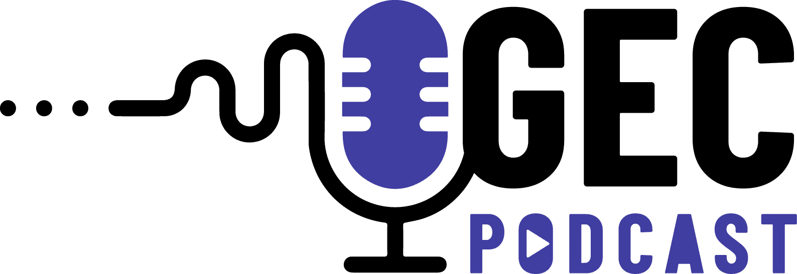

Información General del Proyecto
Áreas Integradas (con énfasis)
- Ciencias Naturales (Énfasis Principal)
- Tecnología e Informática
- Matemáticas
- Lenguaje (Integración funcional)
- Ciencias Sociales (Integración funcional)

Idea/Tema Central del Proyecto

Los estudiantes se convertirán en investigadores de su entorno local, utilizando bioindicadores y otros métodos científicos para identificar, analizar y comunicar los posibles impactos ambientales (positivos o negativos) generados por actividades humanas o fenómenos naturales, fomentando una comprensión profunda de las interacciones ecosistémicas y la importancia de la evidencia científica.
Descripción del Problema o Desafío

A menudo, los estudiantes (y la comunidad en general) desconocen los sutiles pero significativos cambios ambientales que ocurren a su alrededor, o no comprenden cómo las actividades humanas locales impactan los ecosistemas. Existe la necesidad de desarrollar habilidades de observación crítica, indagación científica y análisis de datos para interpretar el estado del medio ambiente local. El desafío es: ¿Cómo podemos, como jóvenes científicos, utilizar la indagación y la evidencia para comprender y comunicar las "huellas" del cambio ambiental en nuestro entorno inmediato y proponer acciones informadas?
Objetivo General del Proyecto
Desarrollar la competencia de indagación científica en los estudiantes de 8° y 9° grado, mediante la investigación de cambios ambientales en su entorno local utilizando bioindicadores y análisis de datos, para que comprendan cómo se construyen explicaciones científicas sobre el mundo natural y deriven conclusiones basadas en evidencia, fomentando su capacidad para proponer acciones de mejora o conservación.
Objetivos Específicos de Aprendizaje
(Vinculados a EBC y Habilidades S.XXI)
- OE1: Formular preguntas de investigación pertinentes sobre cambios ambientales observables en el entorno local, identificando variables relevantes.
- EBC Ciencias Naturales (8-9): Formulo preguntas específicas sobre una observación...
- Habilidad S.XXI: Pensamiento Crítico, Formulación de Problemas.
- OE2: Diseñar y ejecutar procedimientos de observación y recolección de datos sistemáticos...
- EBC Ciencias Naturales (8-9): Registro mis observaciones y resultados...
- EBC Tecnología e Informática (8-9): Utilizo productos tecnológicos adecuados...
- EBC Matemáticas (8-9): Selecciono y uso técnicas e instrumentos para medir...
- Habilidad S.XXI: Alfabetización de Datos, Pensamiento Computacional.
- OE3: Analizar e interpretar datos cualitativos y cuantitativos recolectados...
- EBC Ciencias Naturales (8-9): Utilizo las matemáticas como herramienta para modelar...
- EBC Matemáticas (8-9): Interpreto analítica y críticamente información estadística...
- Habilidad S.XXI: Pensamiento Crítico, Análisis de Datos, Resolución de Problemas.
- OE4: Construir explicaciones y derivar conclusiones sobre los cambios ambientales estudiados...
- EBC Ciencias Naturales (8-9): Saco conclusiones de los experimentos que realizó...
- Habilidad S.XXI: Pensamiento Crítico, Argumentación Basada en Evidencia.
- OE5: Comunicar de forma clara, creativa y persuasiva los hallazgos...
- EBC Lenguaje (Integración funcional): Produzco textos argumentativos...
- EBC Tecnología e Informática (8-9): Utilizo herramientas colaborativas...
- Habilidad S.XXI: Comunicación, Creatividad e Innovación, Colaboración.
- OE6: Evaluar el impacto potencial de las actividades humanas en los ecosistemas locales...
- EBC Ciencias Naturales (8-9): Tomo decisiones sobre alimentación y práctica de ejercicio...
- EBC Tecnología e Informática (8-9): Asumo posturas éticas y responsables...
- Habilidad S.XXI: Ciudadanía, Pensamiento Crítico, Toma de Decisiones.
Fases o Etapas del Proyecto (Metodología ABP)
FASE 1: ¡Alerta Detectives! El Misterio Ambiental Nos Llama
Actividad 1.1: El Llamado a la Acción.
Actividad 1.2: Definiendo Nuestra Misión (Pregunta Problematizadora General).
FASE 2: Equipando a los Bio-Detectives (Investigación y Planificación)
Actividad 2.1: ¿Qué son los Bioindicadores? Nuestros Soplones Naturales.
Actividad 2.2: Delimitando el Terreno y Formulando Preguntas Específicas.
Actividad 2.3: Diseñando Nuestro Plan de Acción (Protocolo de Indagación).
FASE 3: En la Escena del Cambio (Trabajo de Campo y Recolección de Evidencia)
Actividad 3.1: ¡A Recolectar Pistas! (Salidas de Campo).
Actividad 3.2: Registrando la Evidencia (Organización Inicial).
FASE 4: Analizando las Pistas (Procesamiento e Interpretación de Datos)
Actividad 4.1: Los Números Hablan (Análisis Cuantitativo).
Actividad 4.2: Interpretando las Señales (Análisis Cualitativo y Conexiones).
Actividad 4.3: ¿Nuestras Hipótesis eran Correctas? (Validación).
FASE 5: Resolviendo el Caso y Proponiendo Soluciones (Conclusiones y Propuestas)
Actividad 5.1: El Veredicto (Elaboración de Conclusiones).
Actividad 5.2: De Detectives a Agentes de Cambio (Propuestas de Acción).
FASE 6: ¡Extra, Extra! Comunicando Nuestros Hallazgos (Divulgación y Reflexión)
Actividad 6.1: Preparando la Presentación del Caso.
Actividad 6.2: La Gran Revelación (Feria Científica o Presentación a la Comunidad).
Actividad 6.3: Lecciones Aprendidas (Autoevaluación y Reflexión Final).
Recursos Necesarios
- Materiales de campo: Lupas, guantes, frascos para muestras, cintas métricas, etc.
- Materiales de aula/laboratorio: Computadores, software, acceso a internet, etc.
- Recursos humanos: Docentes, posible colaboración de padres o expertos locales.
- Espacios: Aulas, laboratorio, zonas verdes, parques, etc.
Evaluación del Proyecto
Evaluación Formativa (Durante el proceso)
- Observación directa de la participación.
- Revisión de borradores (preguntas, protocolos).
- Diarios de campo o bitácoras.
- Pequeñas presentaciones de avance.
- Autoevaluación y coevaluación periódica.
Evaluación Sumativa (Al finalizar y en hitos clave)
- Calidad del protocolo de investigación.
- Calidad y organización de los datos recolectados.
- Análisis e interpretación de datos.
- Informe final o producto de investigación.
- Presentación oral/visual del proyecto.
- Calidad y viabilidad de las propuestas de acción.
- Rúbrica detallada del proyecto.
Producto(s) Final(es) o Evidencias Tangibles
Por equipo:
- Protocolo de investigación detallado.
- Registro organizado de datos de campo.
- Informe de investigación (escrito, digital, video, etc.).
- Material de divulgación para la feria científica.
Individual:
- Participación en discusiones y trabajo de equipo.
- Contribuciones al diario de campo.
- Reflexión individual sobre el aprendizaje.
Vinculación con el Contexto y la Comunidad
El proyecto se centra en investigar el entorno local inmediato de los estudiantes. Los hallazgos pueden ser compartidos con la comunidad escolar y padres, generando conciencia. Las propuestas de acción pueden implementarse localmente. Se puede invitar a miembros de la comunidad. Posibilidad de articularse con iniciativas ambientales existentes.
Rúbrica de Evaluación Detallada
| CRITERIO DE EVALUACIÓN | NIVEL BAJO (1.0-2.9) | NIVEL BÁSICO (3.0-3.9) | NIVEL ALTO (4.0-4.5) | NIVEL SUPERIOR (4.6-5.0) |
|---|---|---|---|---|
| 1. Formulación de Preguntas y Diseño del Protocolo (OE1, OE2) | Las preguntas son vagas o no investigables. El protocolo es incompleto, carece de claridad o no es viable. No identifica variables clave. | Formula preguntas investigables con ayuda. El protocolo es básico, con algunos elementos claros pero con omisiones o debilidades en el control de variables. | Formula preguntas de investigación claras y pertinentes. El protocolo es detallado, viable y considera la mayoría de variables y controles necesarios. | Formula preguntas de investigación originales, profundas y muy pertinentes. El protocolo es excelente, riguroso, innovador y demuestra un control exhaustivo de variables. |
| 2. Recolección y Registro de Datos (OE2, OE3) | La recolección de datos es esporádica, desorganizada o con errores significativos. El registro es incompleto o confuso. | Recolecta datos siguiendo parcialmente el protocolo, con alguna organización. El registro es comprensible pero podría ser más detallado o preciso. | Recolecta datos de forma sistemática y organizada según el protocolo. El registro es claro, preciso y mayormente completo. | Recolecta datos de forma meticulosa, rigurosa y sistemática, superando los requisitos del protocolo si es necesario. El registro es impecable, detallado y ejemplar. |
| 3. Análisis e Interpretación de Datos (OE3, OE4) | El análisis es superficial, no utiliza herramientas matemáticas/gráficas o las usa incorrectamente. La interpretación no se basa en evidencia. | Realiza un análisis básico de los datos, usando algunas herramientas matemáticas/gráficas con apoyo. La interpretación muestra intentos de conectar con la evidencia. | Analiza los datos correctamente usando herramientas matemáticas/gráficas apropiadas. Interpreta los resultados estableciendo relaciones claras con la evidencia recolectada. | Realiza un análisis profundo y perspicaz de los datos, utilizando herramientas matemáticas/gráficas de forma avanzada y creativa. La interpretación es sólida, bien argumentada y revela una comprensión profunda. |
| 4. Elaboración de Conclusiones y Argumentación (OE4) | Las conclusiones son inexistentes, no responden a las preguntas o no se basan en los datos. La argumentación es débil o ausente. | Elabora conclusiones que responden parcialmente a las preguntas, con alguna conexión a los datos. La argumentación es simple. | Elabora conclusiones claras y pertinentes que responden a las preguntas de investigación, bien fundamentadas en la evidencia analizada. La argumentación es lógica y coherente. | Elabora conclusiones originales y significativas, totalmente fundamentadas en la evidencia, demostrando una profunda comprensión del fenómeno estudiado. La argumentación es robusta, crítica y persuasiva. |
| 5. Propuestas de Acción (OE6) | No propone acciones o las propuestas son irrelevantes o inviables. | Propone acciones básicas, con limitada conexión con las conclusiones o con viabilidad cuestionable. | Propone acciones pertinentes, creativas y mayormente viables, bien conectadas con las conclusiones del estudio. | Propone acciones innovadoras, impactantes, éticas y altamente viables, demostrando un fuerte compromiso cívico y comprensión del contexto. |
| 6. Comunicación y Divulgación (OE5) | La comunicación es confusa, desorganizada y poco atractiva. No logra transmitir los hallazgos clave. | Comunica los hallazgos de forma comprensible, pero con limitaciones en la claridad, organización o uso de recursos visuales/digitales. | Comunica los hallazgos de forma clara, organizada y atractiva, utilizando adecuadamente recursos visuales/digitales. | Comunica los hallazgos de forma excepcional: clara, creativa, persuasiva y con un uso experto de múltiples formatos y recursos, logrando un gran impacto en la audiencia. |
| 7. Trabajo en Equipo y Colaboración (H. S.XXI) | Participación mínima o nula en el equipo. Dificultad para colaborar y asumir responsabilidades. | Participa en las tareas del equipo, pero requiere supervisión para cumplir roles. Colaboración inconsistente. | Participa activamente en el equipo, asume responsabilidades y colabora constructivamente con sus compañeros. | Lidera o contribuye de forma excepcional al trabajo en equipo, fomentando un ambiente colaborativo, respetuoso y altamente productivo. Demuestra iniciativa y apoyo constante a sus compañeros. |
| 8. Uso de la Competencia de Indagación (General) | Muestra poca o ninguna evidencia de aplicar los pasos de la indagación científica. Dependencia total del docente. | Aplica algunos elementos de la indagación con guía constante. Muestra curiosidad inicial pero dificultad para sostener el proceso. | Aplica consistentemente los pasos de la indagación científica (observar, preguntar, planificar, experimentar, analizar, concluir) de forma autónoma en gran medida. | Demuestra una aplicación sobresaliente y autónoma de la competencia de indagación, formulando sus propias preguntas, diseñando procedimientos originales y reflexionando críticamente sobre el proceso científico. |